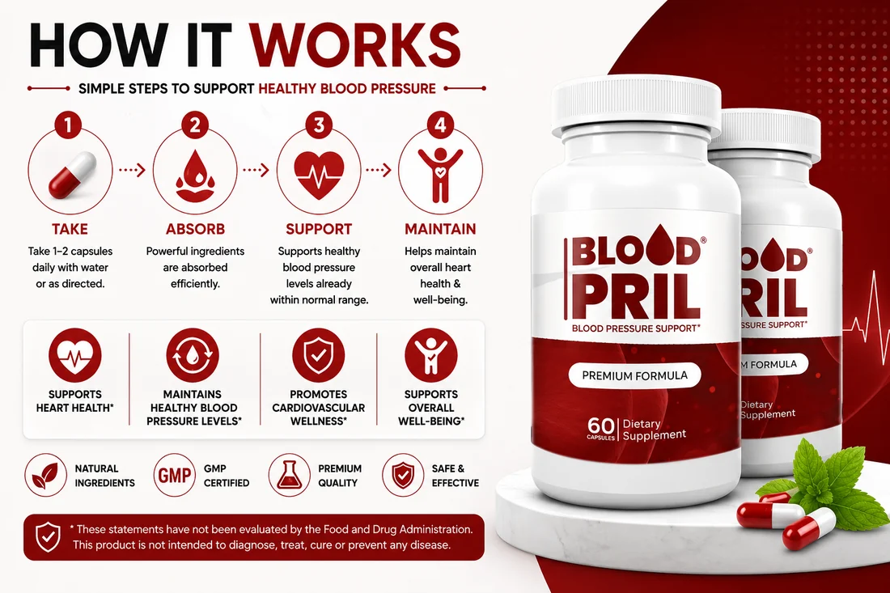

Home › How It Works
How It WorksThree ingredients, one pathway, six connected steps from capsule to circulation.

The manufacturer's own summary compresses this into four steps — take, absorb, support, maintain. That's accurate as far as it goes, but it skips the one detail that actually matters for judging whether the formula is well designed: why citrulline is in there at all. The six steps below fill in that gap.
L-Arginine is the direct substrate for nitric oxide synthase, the enzyme your body uses to produce nitric oxide.
L-Citrulline is absorbed intact and converted to L-Arginine in the kidneys, sidestepping the gut-and-liver breakdown that limits arginine taken alone.
More available nitric oxide signals arterial smooth muscle to relax, widening vessels and lowering resistance to blood flow.
Combining direct arginine with a citrulline precursor is meant to keep nitric oxide precursors available longer than either ingredient alone.
Documented effects of this pathway include improved peripheral circulation and support for arterial flexibility.
Taken each morning with water, ideally before a meal, as part of a consistent routine.
Most oral arginine breaks down before it reaches your bloodstream. L-Citrulline sidesteps that entirely by converting to arginine in the kidneys instead of the gut and liver — which is why it often raises blood arginine levels more effectively than arginine supplementation alone.